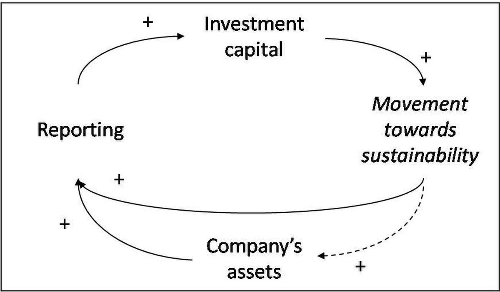

■ 翻篇 / FANPIAN · 知览
SUBTITLE
站得太满的人，最容易被黑天鹅直接扫到

有一种人特别危险，不是他完全不懂，而是他看完一段顺滑的回答，脑子里那块空地就被填平了，连“再看一眼”这个动作都懒得做了，你问他为什么敢拍板，他会说得很轻，AI都这么说了，还能差到哪去，问题就坏在这儿，差不多这三个字，最容易把人送进坑里。
你想啊，真正让人保持警觉的，从来不是知道得很多，而是知道自己还差一块，这块差距一露出来，人就会去翻原文，会去问边界，会去看例外，会去想“这句话到底适不适用到我这里”，可一旦答案被包装得太完整，故事被讲得太顺，怀疑就被压扁了，手还没碰到现场，脑子已经提前签了字。
凹形无知
你知道自己还缺一块，所以会去找原始资料，去看边界，去问例外。
空白还在，判断就还在路上。
这种人慢一点，但没那么容易把幻觉当结论。
凸形无知
你手里已经有一个完整故事，觉得答案已经封箱。
空白被“说得通”盖住了，你甚至不知道自己该继续问什么。
真正的风险，不是没答案，是答案太顺，顺到把问题也一并抹掉。
图注
— 01 —
塔勒布在《黑天鹅》里反复提醒过一件事：人得到的那种“我已经懂了”的满足感，往往和真正理解了多少，并不是一回事。
这句话很狠，狠就狠在它不骂无知，它骂的是假装抵达，你拿到一个语气稳定、结构工整、逻辑自洽的回答，身体会先松一口气，像事情已经结束了，实际上只是模型替你做了一次情绪安抚，它把“不确定”说得像“基本确定”，把“可能”说得像“已经发生”，把“需要核实”说得像“可以直接转发”。
以前这事没这么顺手，因为你要查一件事，多少要经过摩擦，翻页、跳转、对照、看注释、找出处，这些动作本身就在提醒你，别急，答案还没落地，现在 AI 把摩擦拿掉了，你一问，它就给你一个像样的框架，像样到你会误以为，框架本身就是事实，可框架只是骨架，骨架能站起来，不代表里面就有肉。
最危险的，从来不是没看见答案，而是被答案提前安抚了。
— 02 —
我见过最典型的翻车，不是把 AI 当搜索引擎，而是把它当成了一个不会疲惫的专家，你问它一个行业判断，它能把趋势、监管、竞争、用户心理都摆出来，读起来像是站在高处往下看，问题是，它看见的是语言里的世界，不是现场里的世界，它能帮你拼出一个故事，却不能替你证明这个故事真的发生过。
这就很像办公室里那种熟悉场面，群里有人甩来一段 AI 总结，前面几句都很漂亮，老板一看也觉得像那么回事，大家开始顺着这条线往下接，没人再去问原文在哪，没人再去问时间范围对不对，没人再去问这个结论是不是只适用于特定样本，等到后来发现方向跑偏，最先被打脸的往往不是最笨的人，而是最早说“我已经懂了”的人。
这事说白了，不是效率高不高，而是你停得太早了，答案刚一顺下来，你就把继续核实的动作停掉了。
— 03 —
更麻烦的是，这种“停得太早”在办公室里几乎是默认动作，周会前你让 AI 帮你整理一份行业判断，它能把政策、竞争、用户、增长、风险摆成五六条，排版也像回事，语气也很稳，别人一看就会点头，因为那份东西满足了所有表面需求：能汇报、能截图、能转发、能在群里显得自己已经做过功课，至于里面有没有把不同时间段的现象混在一起，有没有把样本很小的个案写成普遍趋势，有没有把“可能有影响”说成“已经造成影响”，通常没人再往下抠，抠下去要时间，要耐心，要得罪刚刚给出答案的那个人。
你在投标、尽调、选题、选品、做竞品分析的时候也一样，AI 给你的东西往往不是一眼假的那种胡说八道，它更像一份语气极其统一的半成品真相，每一段都能对上常识，每一句都像站得住脚，每一个小标题都像在解释世界，问题是，真正决定成败的恰恰不是这些看起来站得住的部分，而是它有没有漏掉最关键的反例，有没有把行业里那条最窄、最脏、最难说清的缝藏起来，比如一个政策只在某个城市生效，比如一个产品只在某个渠道跑通，比如一个增长只靠一次短期活动撑起来，这些东西不写出来，整份回答照样成立，照样顺滑，照样让人误判自己已经摸到了底。
AI 最会制造的，就是这种已知幻觉，它不会像旧式错误那样粗暴，它会把不确定说得像条件充分，把边界说得像不用管，把例外说得像背景噪音，你看到的是一段结构完整的论述，脑子里自然就会补出“既然它能说到这个程度，那大体应该没错”，于是你开始放弃自己的第二轮动作，不去问数据从哪来，不去问适用范围，不去问时间点，不去问是不是把不同来源拼成了一条看似通顺的线，甚至连“这件事有没有更直接的原文”都懒得找，因为答案已经帮你把要问的问题一起回答了。
这就是最阴的地方，AI 不是单纯给你错答案，它是先把你对“错”的警觉磨掉，再把“继续追问”这个动作悄悄拿走，你本来还会觉得哪里不对劲，结果它把不对劲也翻译成了“可以先这样”，你本来还想多看一眼原始材料，结果它把原始材料的缺口用漂亮话填平了，你本来还想留一点空白，可脑子已经被一个足够完整的故事占满，空白一没了，追问的冲动就跟着没了。
人为什么会这么容易被哄住，原因也没那么高尚，很多时候不是你真的信了，而是你不想再承担追问的成本，追问意味着重新读材料、重新拆概念、重新承认自己刚才那个判断还不够硬，这在办公室里是很不讨好的，尤其当你的答案已经被上级看见、已经被同事引用、已经被自己发进群里，继续追问就像在承认前一秒的笃定有点草率，人会本能地躲开这种尴尬，于是顺着那份顺滑答案往下走，把暂停键按成了确认键。
所以这本书最难听的一句话，不是黑天鹅会来，而是你以为自己已经站在它会碰得到的位置上了。
— 04 —
ZAYEN知览
翻篇 · FANPIAN · 知览